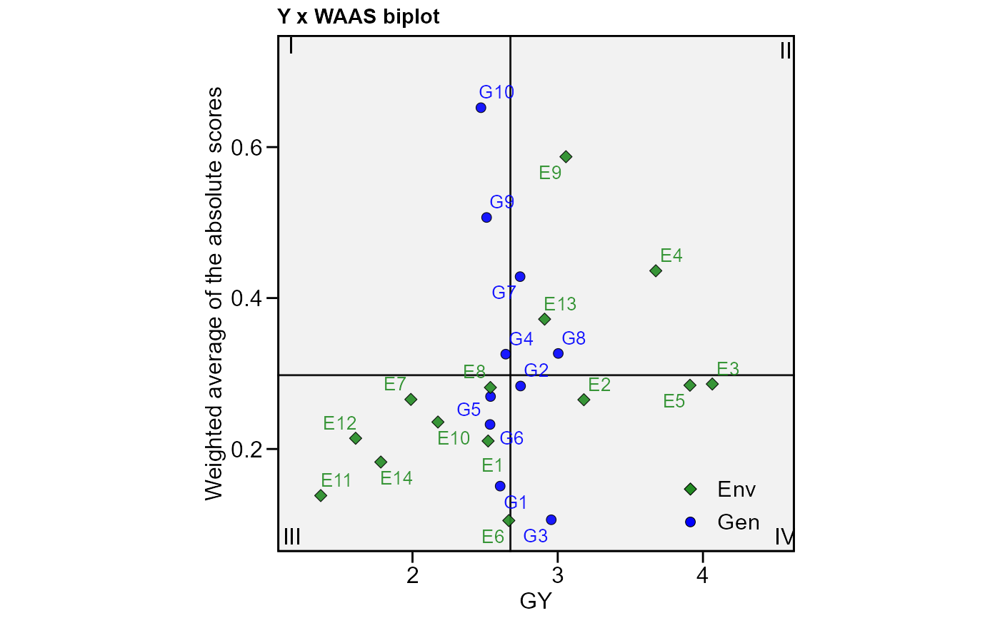

Compute the Weighted Average of Absolute Scores for AMMI analysis (Olivoto et al., 2019).
waas( .data, env, gen, rep, resp, block = NULL, mresp = NULL, wresp = NULL, prob = 0.05, naxis = NULL, ind_anova = FALSE, verbose = TRUE )
Arguments
| .data | The dataset containing the columns related to Environments, Genotypes, replication/block and response variable(s). |
|---|---|
| env | The name of the column that contains the levels of the environments. |
| gen | The name of the column that contains the levels of the genotypes. |
| rep | The name of the column that contains the levels of the replications/blocks. |
| resp | The response variable(s). To analyze multiple variables in a
single procedure a vector of variables may be used. For example |
| block | Defaults to |
| mresp | The new maximum value after rescaling the response variable. By
default, all variables in |
| wresp | The weight for the response variable(s) for computing the WAASBY
index. By default, all variables in |
| prob | The p-value for considering an interaction principal component axis significant. |
| naxis | The number of IPCAs to be used for computing the WAAS index.
Default is |
| ind_anova | Logical argument set to |
| verbose | Logical argument. If |
Value
An object of class waas with the following items for each
variable:
individual A within-environments ANOVA considering a fixed-effect model.
model A data frame with the response variable, the scores of all Principal Components, the estimates of Weighted Average of Absolute Scores, and WAASY (the index that consider the weights for stability and productivity in the genotype ranking.
MeansGxE The means of genotypes in the environments
PCA Principal Component Analysis.
anova Joint analysis of variance for the main effects and Principal Component analysis of the interaction effect.
Details A list summarizing the results. The following information are showed.
WgtResponse, the weight for the response variable in estimating WAASB,WgtWAASthe weight for stability,Ngenthe number of genotypes,Nenvthe number of environments,OVmeanthe overall mean,Minthe minimum observed (returning the genotype and environment),Maxthe maximum observed,Maxthe maximum observed,MinENVthe environment with the lower mean,MaxENVthe environment with the larger mean observed,MinGENthe genotype with the lower mean,MaxGENthe genotype with the larger.augment: Information about each observation in the dataset. This includes predicted values in the
fittedcolumn, residuals in theresidcolumn, standardized residuals in thestdrescolumn, the diagonal of the 'hat' matrix in thehat, and standard errors for the fitted values in these.fitcolumn.probint The p-value for the genotype-vs-environment interaction.
Details
This function compute the weighted average of absolute scores, estimated as follows: \[WAAS_i = \sum_{k = 1}^{p} |IPCA_{ik} \times EP_k|/ \sum_{k = 1}^{p}EP_k\]
where \(WAAS_i\) is the weighted average of absolute scores of the
ith genotype; \(IPCA_{ik}\) is the score of the ith genotype
in the kth IPCA; and \(EP_k\) is the explained variance of the kth
IPCA for k = 1,2,..,p, considering p the number of significant
PCAs, or a declared number of PCAs. For example if prob = 0.05, all
axis that are significant considering this probability level are used. The
number of axis can be also informed by declaring naxis = x. This will
override the number of significant axes according to the argument codeprob.
References
Olivoto, T., A.D.C. L\'ucio, J.A.G. da silva, V.S. Marchioro, V.Q. de Souza, and E. Jost. 2019a. Mean performance and stability in multi-environment trials I: Combining features of AMMI and BLUP techniques. Agron. J. 111:2949-2960. doi: 10.2134/agronj2019.03.0220
See also
Author
Tiago Olivoto tiagoolivoto@gmail.com
Examples
# \donttest{ library(metan) #===============================================================# # Example 1: Analyzing all numeric variables considering p-value# # <= 0.05 to compute the WAAS. # #===============================================================# model <- waas(data_ge, env = ENV, gen = GEN, rep = REP, resp = everything())#> variable GY #> --------------------------------------------------------------------------- #> AMMI analysis table #> --------------------------------------------------------------------------- #> Source Df Sum Sq Mean Sq F value Pr(>F) Proportion Accumulated #> ENV 13 279.574 21.5057 62.33 0.00e+00 . . #> REP(ENV) 28 9.662 0.3451 3.57 3.59e-08 . . #> GEN 9 12.995 1.4439 14.93 2.19e-19 . . #> GEN:ENV 117 31.220 0.2668 2.76 1.01e-11 . . #> PC1 21 10.749 0.5119 5.29 0.00e+00 34.4 34.4 #> PC2 19 9.924 0.5223 5.40 0.00e+00 31.8 66.2 #> PC3 17 4.039 0.2376 2.46 1.40e-03 12.9 79.2 #> PC4 15 3.074 0.2049 2.12 9.60e-03 9.8 89 #> PC5 13 1.446 0.1113 1.15 3.18e-01 4.6 93.6 #> PC6 11 0.932 0.0848 0.88 5.61e-01 3 96.6 #> PC7 9 0.567 0.0630 0.65 7.53e-01 1.8 98.4 #> PC8 7 0.362 0.0518 0.54 8.04e-01 1.2 99.6 #> PC9 5 0.126 0.0252 0.26 9.34e-01 0.4 100 #> Residuals 252 24.367 0.0967 NA NA . . #> Total 536 389.036 0.7258 NA NA <NA> <NA> #> --------------------------------------------------------------------------- #> #> variable HM #> --------------------------------------------------------------------------- #> AMMI analysis table #> --------------------------------------------------------------------------- #> Source Df Sum Sq Mean Sq F value Pr(>F) Proportion Accumulated #> ENV 13 5710.32 439.255 57.22 1.11e-16 . . #> REP(ENV) 28 214.93 7.676 2.70 2.20e-05 . . #> GEN 9 269.81 29.979 10.56 7.41e-14 . . #> GEN:ENV 117 1100.73 9.408 3.31 1.06e-15 . . #> PC1 21 381.13 18.149 6.39 0.00e+00 34.6 34.6 #> PC2 19 319.43 16.812 5.92 0.00e+00 29 63.6 #> PC3 17 114.26 6.721 2.37 2.10e-03 10.4 74 #> PC4 15 81.96 5.464 1.92 2.18e-02 7.4 81.5 #> PC5 13 68.11 5.240 1.84 3.77e-02 6.2 87.7 #> PC6 11 59.07 5.370 1.89 4.10e-02 5.4 93 #> PC7 9 46.69 5.188 1.83 6.33e-02 4.2 97.3 #> PC8 7 26.65 3.808 1.34 2.32e-01 2.4 99.7 #> PC9 5 3.41 0.682 0.24 9.45e-01 0.3 100 #> Residuals 252 715.69 2.840 NA NA . . #> Total 536 9112.21 17.000 NA NA <NA> <NA> #> --------------------------------------------------------------------------- #> #> All variables with significant (p < 0.05) genotype-vs-environment interaction #> Done!#>#>#> # A tibble: 10 x 3 #> GEN GY HM #> <chr> <dbl> <dbl> #> 1 G1 0.151 0.455 #> 2 G10 0.652 1.33 #> 3 G2 0.283 0.985 #> 4 G3 0.106 0.418 #> 5 G4 0.326 0.752 #> 6 G5 0.270 1.16 #> 7 G6 0.233 0.478 #> 8 G7 0.428 0.766 #> 9 G8 0.327 0.541 #> 10 G9 0.507 0.701#===============================================================# # Example 2: Declaring the number of axis to be used for # # computing WAAS and assigning a larger weight for the response # # variable when computing the WAASBY index. # #===============================================================# model2 <- waas(data_ge, env = ENV, gen = GEN, rep = REP, resp = everything(), naxis = 1, # Only to compare with PC1 wresp = 60)#> Warning: Invalid length in 'naxis'. Setting naxis = 1 to all the 2 variables.#> Warning: Invalid length in 'wresp'. Setting wresp = 60 to all the 2 variables.#> variable GY #> --------------------------------------------------------------------------- #> AMMI analysis table #> --------------------------------------------------------------------------- #> Source Df Sum Sq Mean Sq F value Pr(>F) Proportion Accumulated #> ENV 13 279.574 21.5057 62.33 0.00e+00 . . #> REP(ENV) 28 9.662 0.3451 3.57 3.59e-08 . . #> GEN 9 12.995 1.4439 14.93 2.19e-19 . . #> GEN:ENV 117 31.220 0.2668 2.76 1.01e-11 . . #> PC1 21 10.749 0.5119 5.29 0.00e+00 34.4 34.4 #> PC2 19 9.924 0.5223 5.40 0.00e+00 31.8 66.2 #> PC3 17 4.039 0.2376 2.46 1.40e-03 12.9 79.2 #> PC4 15 3.074 0.2049 2.12 9.60e-03 9.8 89 #> PC5 13 1.446 0.1113 1.15 3.18e-01 4.6 93.6 #> PC6 11 0.932 0.0848 0.88 5.61e-01 3 96.6 #> PC7 9 0.567 0.0630 0.65 7.53e-01 1.8 98.4 #> PC8 7 0.362 0.0518 0.54 8.04e-01 1.2 99.6 #> PC9 5 0.126 0.0252 0.26 9.34e-01 0.4 100 #> Residuals 252 24.367 0.0967 NA NA . . #> Total 536 389.036 0.7258 NA NA <NA> <NA> #> --------------------------------------------------------------------------- #> #> variable HM #> --------------------------------------------------------------------------- #> AMMI analysis table #> --------------------------------------------------------------------------- #> Source Df Sum Sq Mean Sq F value Pr(>F) Proportion Accumulated #> ENV 13 5710.32 439.255 57.22 1.11e-16 . . #> REP(ENV) 28 214.93 7.676 2.70 2.20e-05 . . #> GEN 9 269.81 29.979 10.56 7.41e-14 . . #> GEN:ENV 117 1100.73 9.408 3.31 1.06e-15 . . #> PC1 21 381.13 18.149 6.39 0.00e+00 34.6 34.6 #> PC2 19 319.43 16.812 5.92 0.00e+00 29 63.6 #> PC3 17 114.26 6.721 2.37 2.10e-03 10.4 74 #> PC4 15 81.96 5.464 1.92 2.18e-02 7.4 81.5 #> PC5 13 68.11 5.240 1.84 3.77e-02 6.2 87.7 #> PC6 11 59.07 5.370 1.89 4.10e-02 5.4 93 #> PC7 9 46.69 5.188 1.83 6.33e-02 4.2 97.3 #> PC8 7 26.65 3.808 1.34 2.32e-01 2.4 99.7 #> PC9 5 3.41 0.682 0.24 9.45e-01 0.3 100 #> Residuals 252 715.69 2.840 NA NA . . #> Total 536 9112.21 17.000 NA NA <NA> <NA> #> --------------------------------------------------------------------------- #> #> All variables with significant (p < 0.05) genotype-vs-environment interaction #> Done!#>#>#> # A tibble: 10 x 3 #> GEN GY HM #> <chr> <dbl> <dbl> #> 1 G1 0.317 0.280 #> 2 G10 1.00 1.78 #> 3 G2 0.139 1.56 #> 4 G3 0.0434 0.342 #> 5 G4 0.325 0.202 #> 6 G5 0.326 1.58 #> 7 G6 0.0984 0.547 #> 8 G7 0.285 1.22 #> 9 G8 0.499 0.0418 #> 10 G9 0.467 1.07#>#>#> # A tibble: 10 x 3 #> GEN GY HM #> <chr> <dbl> <dbl> #> 1 G1 0.317 0.280 #> 2 G10 -1.00 -1.78 #> 3 G2 0.139 1.56 #> 4 G3 0.0434 0.342 #> 5 G4 -0.325 -0.202 #> 6 G5 -0.326 1.58 #> 7 G6 -0.0984 0.547 #> 8 G7 0.285 -1.22 #> 9 G8 0.499 -0.0418 #> 10 G9 0.467 -1.07#===============================================================# # Example 3: Analyzing GY and HM assuming a random-effect model.# # Smaller values for HM and higher values for GY are better. # # To estimate WAASBY, higher weight for the GY (60%) and lower # # weight for HM (40%) are considered for mean performance. # #===============================================================# model3 <- waas(data_ge, env = ENV, gen = GEN, rep = REP, resp = c(GY, HM), mresp = c("h, l"), wresp = c(60, 40))#> variable GY #> --------------------------------------------------------------------------- #> AMMI analysis table #> --------------------------------------------------------------------------- #> Source Df Sum Sq Mean Sq F value Pr(>F) Proportion Accumulated #> ENV 13 279.574 21.5057 62.33 0.00e+00 . . #> REP(ENV) 28 9.662 0.3451 3.57 3.59e-08 . . #> GEN 9 12.995 1.4439 14.93 2.19e-19 . . #> GEN:ENV 117 31.220 0.2668 2.76 1.01e-11 . . #> PC1 21 10.749 0.5119 5.29 0.00e+00 34.4 34.4 #> PC2 19 9.924 0.5223 5.40 0.00e+00 31.8 66.2 #> PC3 17 4.039 0.2376 2.46 1.40e-03 12.9 79.2 #> PC4 15 3.074 0.2049 2.12 9.60e-03 9.8 89 #> PC5 13 1.446 0.1113 1.15 3.18e-01 4.6 93.6 #> PC6 11 0.932 0.0848 0.88 5.61e-01 3 96.6 #> PC7 9 0.567 0.0630 0.65 7.53e-01 1.8 98.4 #> PC8 7 0.362 0.0518 0.54 8.04e-01 1.2 99.6 #> PC9 5 0.126 0.0252 0.26 9.34e-01 0.4 100 #> Residuals 252 24.367 0.0967 NA NA . . #> Total 536 389.036 0.7258 NA NA <NA> <NA> #> --------------------------------------------------------------------------- #> #> variable HM #> --------------------------------------------------------------------------- #> AMMI analysis table #> --------------------------------------------------------------------------- #> Source Df Sum Sq Mean Sq F value Pr(>F) Proportion Accumulated #> ENV 13 5710.32 439.255 57.22 1.11e-16 . . #> REP(ENV) 28 214.93 7.676 2.70 2.20e-05 . . #> GEN 9 269.81 29.979 10.56 7.41e-14 . . #> GEN:ENV 117 1100.73 9.408 3.31 1.06e-15 . . #> PC1 21 381.13 18.149 6.39 0.00e+00 34.6 34.6 #> PC2 19 319.43 16.812 5.92 0.00e+00 29 63.6 #> PC3 17 114.26 6.721 2.37 2.10e-03 10.4 74 #> PC4 15 81.96 5.464 1.92 2.18e-02 7.4 81.5 #> PC5 13 68.11 5.240 1.84 3.77e-02 6.2 87.7 #> PC6 11 59.07 5.370 1.89 4.10e-02 5.4 93 #> PC7 9 46.69 5.188 1.83 6.33e-02 4.2 97.3 #> PC8 7 26.65 3.808 1.34 2.32e-01 2.4 99.7 #> PC9 5 3.41 0.682 0.24 9.45e-01 0.3 100 #> Residuals 252 715.69 2.840 NA NA . . #> Total 536 9112.21 17.000 NA NA <NA> <NA> #> --------------------------------------------------------------------------- #> #> All variables with significant (p < 0.05) genotype-vs-environment interaction #> Done!#>#>#> # A tibble: 10 x 3 #> GEN GY HM #> <chr> <dbl> <dbl> #> 1 G1 4 1 #> 2 G10 10 9 #> 3 G2 3 4 #> 4 G3 1 2 #> 5 G4 6 7 #> 6 G5 8 10 #> 7 G6 7 3 #> 8 G7 5 6 #> 9 G8 2 8 #> 10 G9 9 5# }